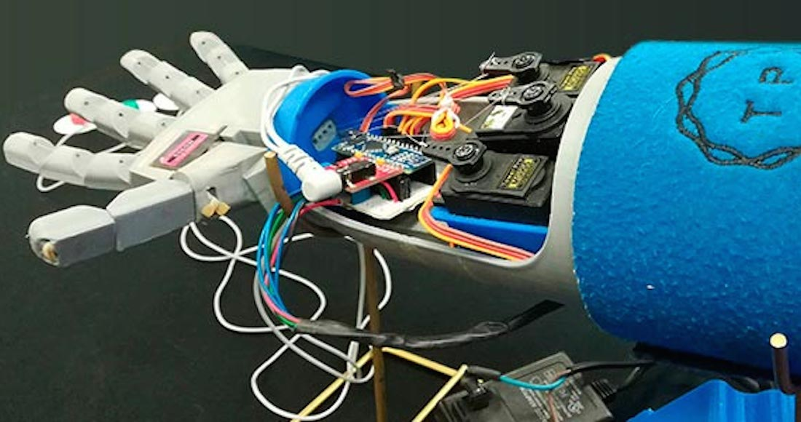

Veamos el Futuro
Explora los límites de la medicina
Prótesis de extremidades
Existen varios tipos de prótesis diseñadas para adaptarse a diferentes necesidades y partes del cuerpo. Aquí están algunos de los más comunes:
Prótesis de extremidades (piernas y brazos):
Prótesis de pierna: Diseñadas para reemplazar una pierna o parte de ella, y permitir caminar, correr o realizar actividades cotidianas. Pueden ser de bajo impacto o de alto rendimiento, incluyendo prótesis deportivas.

Prótesis de brazo: Sustituyen el brazo o la mano y pueden tener diferentes grados de funcionalidad, desde versiones básicas hasta brazos biónicos controlados por impulsos nerviosos.
